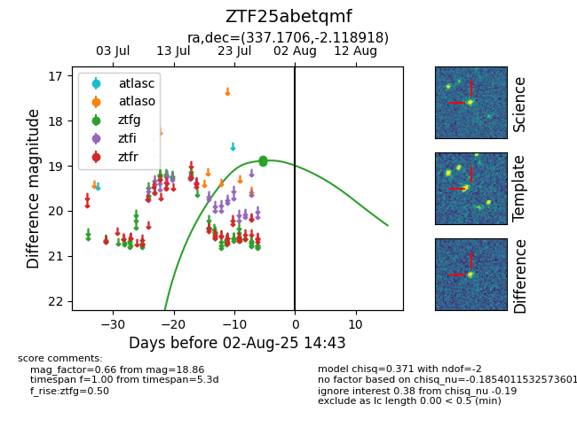

Target ZTF25abetqmf at 2025-08-06 17:45, see:
FINK: fink-portal.org/ZTF25abetqmf
Lasair: lasair-ztf.lsst.ac.uk/objects/ZTF25abetqmf
ALeRCE: alerce.online/object/ZTF25abetqmf
alt names
ZTF25abetqmf (ztf,fink)
coordinates:
equatorial (ra, dec) = (337.1706,-2.11892)
galactic (l, b) = (62.9764,-47.66424)
photometry
last ztfg=18.86
3 ztfg detections
